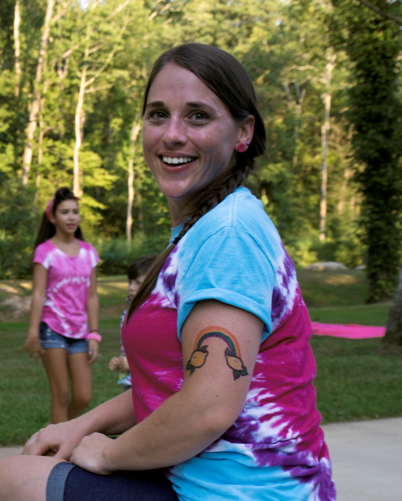

Prove is the people-decision system from Be Legendary. After twenty-five years inside hundreds of small and mid-sized companies, we saw the same thing break in every industry — the wrong people hired, the wrong people promoted, the right people lost. Prove is what we built to solve it.
James is the creator of the Flag Model and sole author of the forthcoming Lost Disciplines of Leadership™, and co-authored Discover Your Inner Strength alongside Stephen Covey, Ken Blanchard, Deepak Chopra and Brian Tracy. He built his frameworks across twenty-five years inside hundreds of leadership teams — work featured in CNN, CNN Money and Business Insider, and delivered to 80% of the Fortune 500 through Be Legendary’s team-building practice.
The results are measurable: one $3B client’s leadership team improved its daily mindset scores 209% in the thirty days after working with him. He created the Commitment Quotient for a simple reason — leaders kept betting on the wrong people, not because they lacked judgment, but because they lacked a signal they could trust. Prove is that signal.
Prove is backed by a full bench of people leaders — the same experts who ran the fractional engagements that revealed the pattern CQ now measures.
Productivity, executive coaching, accountability, emotional intelligence, small-business leadership.
HR, organizational development, executive coaching, team culture, scaling small businesses.
Talent strategy, multi-site workforce leadership, bilingual HR ops, culture, scaling consumer brands.
Executive coaching, personal branding, strengths- and values-based teaming.

Total rewards & culture, employee experience & engagement, holistic well-being, accountability coaching.
Small-business coach, NLP practitioner, marketing, empowering women, high-impact experiences.
Transformation, restorative practices, facilitation, nonviolent communication, social leadership.
Clarity consulting, strategic planning, facilitation, large-scale problem solving, CPA.
"James has a great way of capturing your attention with thought-provoking activities and messages. You walk away inspired to grow yourself, help others, and — as James would say — Be Legendary."
"A very creative, talented and trustworthy man… a sincere desire to help others. I strongly recommend him to anyone seeking an original, innovative approach."
Be Legendary helps executive teams find where they break first and rebuild the disciplines that broke. Prove answers the companion question — who on the team has the behavioral capacity to carry the load. Two doors, one house: truth over comfort, paid daily.
Visit Be Legendary ↗Lost Disciplines diagnoses what is broken on a team. The Commitment Quotient proves who can fix it. Together they turn leadership from guesswork into evidence.